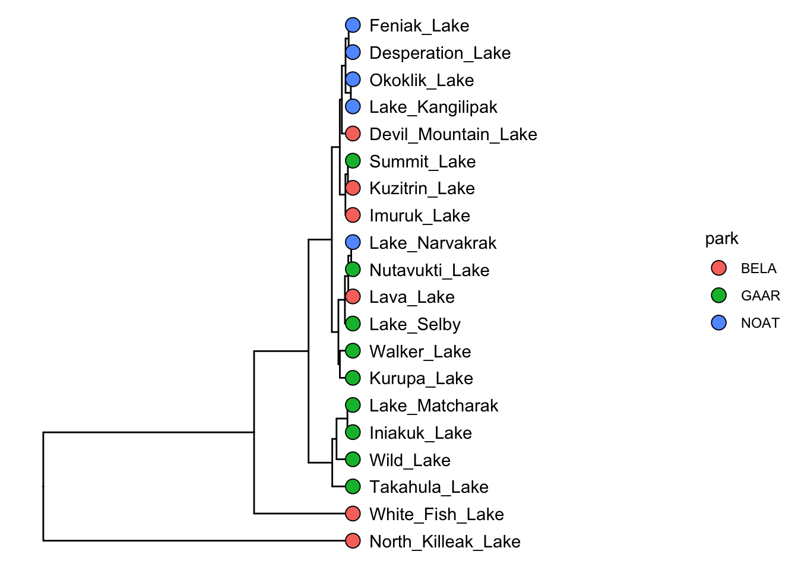

7 pca
In addition to heirarchical clustering, there is another way to look at our data in a cluster context - i.e. another way to identify clusters of samples that have similar properties based on the analytes in the data set. This method is called k-means, which we will look at later, because for it we first need to have a look at dimensionality reduction techniques, particularly principal components analysis (PCA).
7.1 pca
PCA looks at all the variance in a high dimensional data set and chooses new axes within that data set that align with the directions containing highest variance. These new axes are called principal components. Let’s look at an example:

In the example above, the three dimensional space can be reduced to a two dimensional space with the principal components analysis. New axes (principal components) are selected (bold arrows on left) that become the x and y axes in the principal components space (right).
We can run and visualize principal components analyses using the runMatrixAnalysis() function as in the example below:
AK_lakes_pca <- runMatrixAnalysis(
data = alaska_lake_data,
analysis = c("pca"),
column_w_names_of_multiple_analytes = "element",
column_w_values_for_multiple_analytes = "mg_per_L",
columns_w_values_for_single_analyte = c("water_temp", "pH"),
columns_w_additional_analyte_info = "element_type",
columns_w_sample_ID_info = c("lake", "park")
)
## Analytes are all numeric and compatible with the analysis selected.
ggplot(data = AK_lakes_pca, aes(x = Dim.1, y = Dim.2)) +
geom_point(aes(fill = park), shape = 21, size = 4, alpha = 0.8) +
geom_label_repel(aes(label = lake), alpha = 0.5) +
theme_classic()
Great! In this plot we can see that White Fish Lake and North Killeak Lake, both in BELA park, are quite different from the other parks (they are separated from the others along dimension 1, i.e. the first principal component). At the same time, Wild Lake, Iniakuk Lake, Walker Lake, and several other lakes in GAAR park are different from all the others (they are separated from the others along dimension 2, i.e. the second principal component).
Important question: what makes the lakes listed above different from the others? Certainly some aspect of their chemistry, since that’s the data that this analysis is built upon, but how do we determine which analyte(s) are driving the differences among the lakes that we see in the PCA plot?
7.2 ordination plots
Let’s look at how to access the information about which analytes are major contributors to each principal component. This is important because it will tell you which analytes are associated with particular dimensions, and by extension, which analytes are associated with (and are markers for) particular groups in the PCA plot. This can be determined using an ordination plot. Let’s look at an example. We can obtain the ordination plot information using runMatrixAnalysis() with analysis = "pca_ord":
## Analytes are all numeric and compatible with the analysis selected.
## # A tibble: 6 × 3
## analyte Dim.1 Dim.2
## <chr> <dbl> <dbl>
## 1 water_temp 0.0769 -0.267
## 2 pH 0.704 0.0190
## 3 C 0.297 -0.248
## 4 N 0.00446 0.732
## 5 P 0.485 -0.0817
## 6 Cl 0.978 0.0152We can now visualize the ordination plot using our standard ggplot plotting techniques. Note the use of geom_label_repel() and filter() to label certain segments in the ordination plot. You do not need to use geom_label_repel(), you could use the built in geom_label(), but geom_label_repel() can make labelling your segments easier.
AK_lakes_pca_ord <- runMatrixAnalysis(
data = alaska_lake_data,
analysis = c("pca_ord"),
column_w_names_of_multiple_analytes = "element",
column_w_values_for_multiple_analytes = "mg_per_L",
columns_w_values_for_single_analyte = c("water_temp", "pH"),
columns_w_additional_analyte_info = "element_type",
columns_w_sample_ID_info = c("lake", "park")
)
## Analytes are all numeric and compatible with the analysis selected.
head(AK_lakes_pca_ord)
## # A tibble: 6 × 3
## analyte Dim.1 Dim.2
## <chr> <dbl> <dbl>
## 1 water_temp 0.0769 -0.267
## 2 pH 0.704 0.0190
## 3 C 0.297 -0.248
## 4 N 0.00446 0.732
## 5 P 0.485 -0.0817
## 6 Cl 0.978 0.0152
ggplot(AK_lakes_pca_ord) +
geom_segment(aes(x = 0, y = 0, xend = Dim.1, yend = Dim.2, color = analyte), size = 1) +
geom_circle(aes(x0 = 0, y0 = 0, r = 1)) +
geom_label_repel(
data = filter(AK_lakes_pca_ord, Dim.1 > 0.9, Dim.2 < 0.1, Dim.2 > -0.1),
aes(x = Dim.1, y = Dim.2, label = analyte), xlim = c(1,1.5)
) +
geom_label_repel(
data = filter(AK_lakes_pca_ord, Dim.2 > 0.5),
aes(x = Dim.1, y = Dim.2, label = analyte), direction = "y", ylim = c(1,1.5)
) +
coord_cartesian(xlim = c(-1,1.5), ylim = c(-1,1.5)) +
theme_bw()Great! With this ordination plot we can now see that the abundances of K, Cl, Br, and Na are the major contributors of variance to the first principal component (or the first dimension). The abundances of these elements are what make White Fish Lake and North Killeak Lake different from the other lakes. We can also see that the abundances of N, S, and Ca are the major contributors to variance in teh second dimension, whic means that these elements ar what set Wild Lake, Iniakuk Lake, Walker Lake, and several other lakes in GAAR park apart from the rest of the lakes in the data set.
7.3 principal components
We also can access information about the how much of the variance in the data set is explained by each principal component, and we can plot that using ggplot:
AK_lakes_pca_dim <- runMatrixAnalysis(
data = alaska_lake_data,
analysis = c("pca_dim"),
column_w_names_of_multiple_analytes = "element",
column_w_values_for_multiple_analytes = "mg_per_L",
columns_w_values_for_single_analyte = c("water_temp", "pH"),
columns_w_additional_analyte_info = "element_type",
columns_w_sample_ID_info = c("lake", "park")
)
## Analytes are all numeric and compatible with the analysis selected.
head(AK_lakes_pca_dim)
## # A tibble: 6 × 2
## principal_component percent_variance_explained
## <dbl> <dbl>
## 1 1 48.8
## 2 2 18.6
## 3 3 11.6
## 4 4 7.88
## 5 5 4.68
## 6 6 3.33
ggplot(
data = AK_lakes_pca_dim,
aes(x = principal_component, y = percent_variance_explained)
) +
geom_line() +
geom_point() +
theme_bw()Cool! We can see that the first principal component retains nearly 50% of the variance in the original dataset, while the second dimension contains only about 20%.
7.4 exercises
In this set of exercises you will choose to complete ONE of the options below. For either option please refer to Chapter 12 for help with principal component and ordination plots. Also, when you are filling out the runMatrixAnalysis() template, you can use the colnames() function to help you specify a long list of column names rather than typing them out by hand. For example, in the periodic table data set, we can refer to a set of columns (columns 10 through 20) with the following command:
colnames(periodic_table_subset)[10:20]
## [1] "electronegativity_pauling" "first_ionization_poten_eV"
## [3] "second_ionization_poten_eV" "third_ionization_poten_eV"
## [5] "electron_affinity_eV" "atomic_radius_ang"
## [7] "ionic_radius_ang" "covalent_radius_ang"
## [9] "atomic_volume_cm3_per_mol" "electrical_conductivity_mho_per_cm"
## [11] "specific_heat_J_per_g_K"
colnames(periodic_table_subset)[c(18:20, 23:25)]
## [1] "atomic_volume_cm3_per_mol" "electrical_conductivity_mho_per_cm"
## [3] "specific_heat_J_per_g_K" "thermal_conductivity_W_per_m_K"
## [5] "polarizability_A_cubed" "heat_atomization_kJ_per_mol"We can use that command in the template, as in the example below. With the notation colnames(periodic_table_subset)[c(5:7,9:25)], we can mark columns 5 - 7 and 9 - 25 as columns_w_values_for_single_analyte (note what happens when you run c(5:7,9:25) in the console, and what happens when you run colnames(periodic_table_subset)[c(5:7,9:25)] in the console). With the notation colnames(periodic_table_subset)[c(1:4, 8)] we can mark columns 1 - 4 and column 8 as columns_w_sample_ID_info (note what happens when you run c(1:4, 8) in the console, and what happens when you run colnames(periodic_table_subset)[c(1:4, 8)] in the console).
7.4.1 option 1: human metabolomics.
This first option is to work with a dataset describing metabolomics data (i.e. abundances of > 100 different biochemicals) from each of 93 human patients, some of which have Chronic Kidney Disease. If you choose this option, your task is to discover a biomarker for Chronic Kidney Disease. This means that you will need to determine a metabolite whose abundance is strongly associated with the disease. To do this you should complete the following:
- Run a PCA analysis on
metabolomics_data(i.e.runMatrixAnalysis()withanalysis = "pca") - Plot the results of the analysis to determine which principal component (i.e. dimension) separates the healthy and kidney_disease samples.
- Obtain the ordination plot coordinates for the analytes in the PCA analysis (i.e.
runMatrixAnalysis()withanalysis = "pca_ord"). - Visualize the ordination plot and determine which of the analytes are strongly associated with the principal component (i.e. dimension) separates the healthy and kidney_disease samples.
- Bingo! These analytes are associated with Chronic Kidney Disease and could be biomarkers for such.
7.4.2 option 2: grape vine chemistry
This second option is to work with a dataset describing metabolomics data (i.e. abundances of > 100 different biochemicals) from 5 different wine grape varieties. If you choose this option, your task is to discover a biomarker for Chardonnay and a biomarker for Cabernet Sauvignon. This means that you will need to identify two metabolites, each of which are associated with one of those two grape varieties. To do this you should complete the following:
- Run a PCA analysis on
wine_grape_data(i.e.runMatrixAnalysis()withanalysis = "pca") - Plot the results of the analysis to determine which principal component (i.e. dimension) separates the Chardonnay samples from the other varieties and the Cabernet Sauvignon samples from the other varieties.
- Obtain the ordination plot coordinates for the analytes in the PCA analysis (i.e.
runMatrixAnalysis()withanalysis = "pca_ord"). - Visualize the ordination plot and determine which of the analytes are strongly associated with the principal component (i.e. dimension) separates the Chardonnay samples from the other varieties and the Cabernet Sauvignon samples from the other varieties.
- Bingo! These analytes are associated with those varieites and could be biomarkers for such.